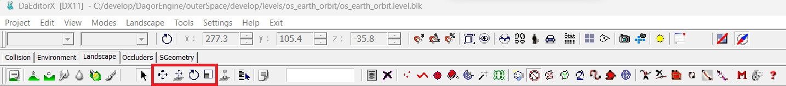
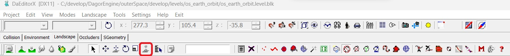
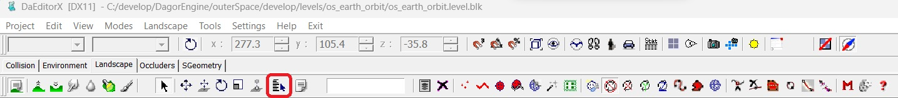

daEditor
Overview
daEditor (Dagor Editor) is one of the two primary tools for working with assets, and in some cases, for creating them. It offers a vast array of parameters and features. In this article, we will cover the basic principles of using daEditor, aimed at helping new users get started.
{kind=link}
Working with Assets on the Landscape
All asset-related work is performed within the Landscape tab. This is the central workspace for placing, editing, and managing assets on the terrain or environment you’re developing.
{kind=link}
Basic Logic and Controls
The logic in daEditor is largely similar to that of 3ds Max. Below is an overview of the essential controls and buttons, all of which come with tooltips – be sure to read them for more detailed information.
Create Entity
This button allows you to place an object onto the map.

Console
If something isn’t working as expected, or if something isn’t working at all, check the console for errors (look for red text).

Object Movement Controls
These buttons control the movement of objects. The hotkeys are the same as in 3ds Max.
{kind=link}
Snap Settings
This button allows you to snap objects to the landscape grid (for object movement), as well as snap rotation and scale.
{kind=link}
Drop Pivot to Ground
Use this to “drop” the pivot point to the ground if you’ve accidentally placed it in the air. If your object has the Place on collision property, this will only affect the pivot, while the object itself will always remain on the landscape.
{kind=link}
Move to Selected Object
This button will move your camera to the currently selected object.

Select Object by Name
This allows you to select an object by its name.
{kind=link}
Export Group as Composite
This button lets you export a group of objects as a composite entity.
{kind=link}
Break Composite into Individual Entities
Use this button to break down a composite entity into its individual components
(.dag files).
{kind=link}
Working with Object Properties
When an object is selected, you can access its properties by pressing P (for
“Properties”) on your keyboard.

1 Object Name in Scene This field displays the name of the object within the scene. It is often helpful to have the scene names match the asset names. You can use the Landscape > Unify object names command to accomplish this.
2 Collision Placement Settings This property defines how the object interacts with landscape collision:
Ignore Collision: the object’s height matches its pivot point.
Place Pivot: the pivot point (typically the origin point of the asset in the 3ds Max scene) is placed directly on the collision surface.
Place Pivot and Use Normal: the object’s pivot aligns to the normal of the landscape, useful for placing objects like houses on hills so that they tilt naturally.
Place 3-Point (bbox): a bounding box is created around the object, and the object is placed so that at least three points of the bounding box align with the collision surface.
Place Foundation (bbox): all four points of the bounding box base align with the collision surface.
Place on Water (floatable): specifically for floating objects, this option places the object on a water surface.
Place Pivot with RendInst Collision: this option aligns the object’s pivot with the collision of the corresponding rendinst.
3 Actual Object Name This property shows the real name of the object placed on the map. You can select a different object here instead of placing a new one.
4 Shader Parameter Seed Generation This option generates seeds for the shader parameters of selected objects, including those within composite entities (as they contain many sub-objects):
Individual: generates a unique seed for each selected object.
Equal: generates the same seed for all selected objects.
Seed Slider: adjust the seed value for the previously selected seed type (either individual or equal).
Note
These seeds affect only shader parameters, not other aspects of composites. Currently, this feature is used solely for procedural painting.
5 Object Seed Generation on the Map This is similar to the previous property but operates on a larger scale, generating seeds for entire composite entities rather than individual shader parameters:
Individual: generates a unique seed for each selected object.
Equal: generates the same seed for all selected objects.
Seed Slider: adjust the seed value for the previously selected seed type (either individual or equal).
Exporting a Location
To export a location, navigate to the menu Project > Export to Game (PC format).

After selecting this option, a series of dialogs will appear, allowing you to choose whether to export all elements of the created location. The default settings are typically correct and do not require adjustments.
The most critical part of this process is specifying the correct export path for the level. Occasionally, the tools might malfunction and suggest saving the level in incorrect directories.
A simple way to verify that you’re exporting the level to the right location is to check whether you’re replacing the existing binary file. If you’re prompted with a message indicating that you’re about to overwrite an existing file, and given the option to “replace” or “rename”, then you’re exporting to the correct directory.